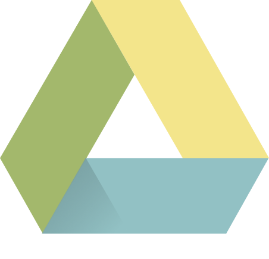

Opdracht
Bedenk en ontwerp individueel een interactieve feature voor een matching-applicatie. Deze combineer je met features van je klasgenoten tot één werkende interactieve matching-applicatie.
Proces
Al gelijk in de eerste week was ik verliefd geworden op mijn concept.
Het ging om een matching applicatie die vooral focus legde op zinvolle
contact met mensen rond de wereld. Rond de tijd toen ik dit idee
bedacht zat ik te kijken naar video’s over het internet van vroeger en
de cultuur erachter. Het grote verschil met het internet van toen en
nu is echt de snelheid qua mijn gevoel. Alles gebeurt sneller en
daardoor is ook contact tussen mensen minder geworden. Ik wou dus
graag iets van het oude internet terugbrengen door alles weer wat
langzamer te maken met online contact.
Hierbij bedacht ik dus SandScript, een concept die
focuste op het thema van een brief in een fles. Als individuele
feature wou ik dus graag focussen op een drafts functie. Het schrijven
en bewaren van je brieven die je dan mogelijk later zou kunnen
versturen naar een match.
Aangezien ik in dit blok begon aan back-end te
leren was wel in het begin een beetje verwarrend voor me en duurde het
ook echt een tijdje voordat ik begon comfortabel te worden met de taal
eromheen.
Ik begon echt mijn ritme te vinden in de week voor
het team gedeelte van het project (ik klokte ook op dat moment een
ontzettend veel aantal uren in het project, maar dat kwam ook
gedeeltelijk omdat ik een flow zat die week).
In het team gedeelte nam ik een leidende rol en
focuste ik op de documentatie van het project. Daarnaast had ik mijn
individuele feature nog meer uitgewerkt op de back-end.
Reflectie
Als ik vooral terugkijk naar dit project zie ik ontzettende groei bij
mezelf als front-end developer. Ik kan nog heel goed herinneren dat ik
bij de eerste paar lessen van back-end hoofdpijn krijg van alle
informatie die naar ons werd geschoten. Echter, met wat
tijdinvestering en doorzettingsvermogen heb ik een comfortabele eerste
stap kunnen zetten in de wereld van back-end.
Uiteindelijk ben ik ontzettend trots op dit
resultaat en ik zou graag nog mijn eigen portfolio weer een update
geven om te laten zien wat ik allemaal heb geleerd dit blok.
Bestanden
Metadata
Periode: 2023 - Jaar 2 Blok 3
Vak: Blok Tech